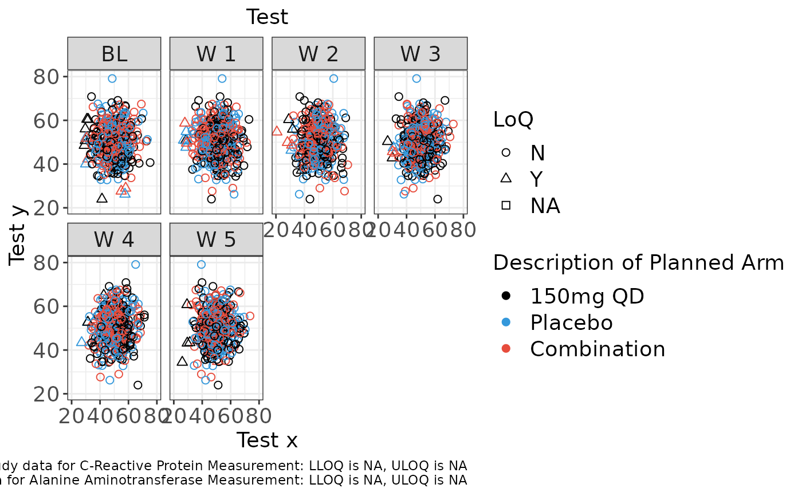

g_correlationplot.RdDefault plot displays correlation facetted by visit with color attributed treatment arms and symbol attributed LOQ values.
g_correlationplot( label = "Correlation Plot", data, param_var = "PARAMCD", xaxis_param = "CRP", xaxis_var = "BASE", xvar = xvar, yaxis_param = "IGG", yaxis_var = "AVAL", yvar = yvar, trt_group = "ARM", visit = "AVISITCD", loq_flag_var = "LOQFL_COMB", visit_facet = TRUE, loq_legend = TRUE, unit = "AVALU", xmin = NA, xmax = NA, ymin = NA, ymax = NA, title_text = title_text, xaxis_lab = xaxis_lab, yaxis_lab = yaxis_lab, color_manual = NULL, shape_manual = NULL, facet_ncol = 2, facet = FALSE, facet_var = "ARM", reg_line = FALSE, hline = NULL, vline = NULL, rotate_xlab = FALSE, font_size = 12, dot_size = 2, reg_text_size = 3 )
| label | text string to used to identify plot. |
|---|---|
| data | ADaM structured analysis laboratory data frame e.g. ALB. |
| param_var | name of variable containing biomarker codes e.g. PARAMCD. |
| xaxis_param | x-axis biomarker to visualize e.g. IGG. |
| xaxis_var | name of variable containing biomarker results displayed on X-axis e.g. BASE. |
| xvar | x-axis analysis variable from transposed data set. |
| yaxis_param | y-axis biomarker to visualize e.g. IGG. |
| yaxis_var | name of variable containing biomarker results displayed on Y-axise.g. AVAL. |
| yvar | y-axis analysis variable from transposed data set. |
| trt_group | name of variable representing treatment group e.g. ARM. |
| visit | name of variable containing nominal visits e.g. AVISITCD. |
| loq_flag_var | name of variable containing LOQ flag e.g. LOQFL_COMB. |
| visit_facet | visit facet toggle. |
| loq_legend | `logical` whether to include LoQ legend. |
| unit | name of variable containing biomarker unit e.g. AVALU. |
| xmin | x-axis lower zoom limit. |
| xmax | x-axis upper zoom limit. |
| ymin | y-axis lower zoom limit. |
| ymax | y-axis upper zoom limit. |
| title_text | plot title. |
| xaxis_lab | x-axis label. |
| yaxis_lab | y-axis label. |
| color_manual | vector of colors applied to treatment values. |
| shape_manual | vector of symbols applied to LOQ values. (used with loq_flag_var). |
| facet_ncol | number of facets per row. |
| facet | set layout to use treatment facetting. |
| facet_var | variable to use for treatment facetting. |
| reg_line | include regression line and annotations for slope and coefficient. Use with facet = TRUE. |
| hline | y-axis value to position a horizontal line. |
| vline | x-axis value to position a vertical line. |
| rotate_xlab | 45 degree rotation of x-axis label values. |
| font_size | font size control for title, x-axis label, y-axis label and legend. |
| dot_size | plot dot size. |
| reg_text_size | font size control for regression line annotations. |
Regression uses deming model.
Nick Paszty (npaszty) paszty.nicholas@gene.com
Balazs Toth (tothb2) toth.balazs@gene.com
# Example using ADaM structure analysis dataset. library(scda) library(stringr) library(tidyr) # original ARM value = dose value arm_mapping <- list( "A: Drug X" = "150mg QD", "B: Placebo" = "Placebo", "C: Combination" = "Combination" ) color_manual <- c("150mg QD" = "#000000", "Placebo" = "#3498DB", "Combination" = "#E74C3C") # assign LOQ flag symbols: circles for "N" and triangles for "Y", squares for "NA" shape_manual <- c("N" = 1, "Y" = 2, "NA" = 0) ASL <- synthetic_cdisc_data("latest")$adsl ALB <- synthetic_cdisc_data("latest")$adlb var_labels <- lapply(ALB, function(x) attributes(x)$label) ALB <- ALB %>% mutate(AVISITCD = case_when( AVISIT == "SCREENING" ~ "SCR", AVISIT == "BASELINE" ~ "BL", grepl("WEEK", AVISIT) ~ paste( "W", trimws( substr( AVISIT, start = 6, stop = str_locate(AVISIT, "DAY") - 1 ) ) ), TRUE ~ NA_character_)) %>% mutate(AVISITCDN = case_when( AVISITCD == "SCR" ~ -2, AVISITCD == "BL" ~ 0, grepl("W", AVISITCD) ~ as.numeric(gsub("\\D+", "", AVISITCD)), TRUE ~ NA_real_)) %>% # use ARMCD values to order treatment in visualization legend mutate(TRTORD = ifelse(grepl("C", ARMCD), 1, ifelse(grepl("B", ARMCD), 2, ifelse(grepl("A", ARMCD), 3, NA)))) %>% mutate(ARM = as.character(arm_mapping[match(ARM, names(arm_mapping))])) %>% mutate(ARM = factor(ARM) %>% reorder(TRTORD)) attr(ALB[["ARM"]], "label") <- var_labels[["ARM"]] # given the 2 param and 2 analysis vars we need to transform the data plot_data_t1 <- ALB %>% gather(ANLVARS, ANLVALS, PARAM, LBSTRESC, BASE2, BASE, AVAL, BASE, LOQFL) %>% mutate(ANL.PARAM = ifelse(ANLVARS %in% c("PARAM", "LBSTRESC", "LOQFL"), paste0(ANLVARS, "_", PARAMCD), paste0(ANLVARS, ".", PARAMCD))) %>% select(USUBJID, ARM, ARMCD, AVISITN, AVISITCD, ANL.PARAM, ANLVALS) %>% spread(ANL.PARAM, ANLVALS)#> Warning: attributes are not identical across measure variables; #> they will be dropped# the transformed analysis value variables are character and need to be converted to numeric for # ggplot # remove records where either of the analysis variables are NA since they will not appear on the # plot and will ensure that LOQFL = NA level is removed plot_data_t2 <- plot_data_t1 %>% filter(!is.na(BASE.CRP) & !is.na(AVAL.ALT)) %>% mutate_at(vars(contains(".")), as.numeric) %>% mutate(LOQFL_COMB = ifelse(LOQFL_CRP == "Y" | LOQFL_ALT == "Y", "Y", "N")) g_correlationplot( label = "Correlation Plot", data = plot_data_t2, param_var = "PARAMCD", xaxis_param = c("CRP"), xaxis_var = "AVAL", xvar = "AVAL.CRP", yaxis_param = c("ALT"), yaxis_var = "BASE", yvar = "BASE.ALT", trt_group = "ARM", visit = "AVISITCD", visit_facet = TRUE, loq_legend = TRUE, unit = "AVALU", xmin = 20, xmax = 80, ymin = 20, ymax = 80, title_text = "Test", xaxis_lab = "Test x", yaxis_lab = "Test y", color_manual = color_manual, shape_manual = shape_manual, facet_ncol = 4, facet = FALSE, facet_var = "ARM", reg_line = FALSE, hline = NULL, vline = .5, rotate_xlab = FALSE, font_size = 14, dot_size = 2, reg_text_size = 3 )#>#>